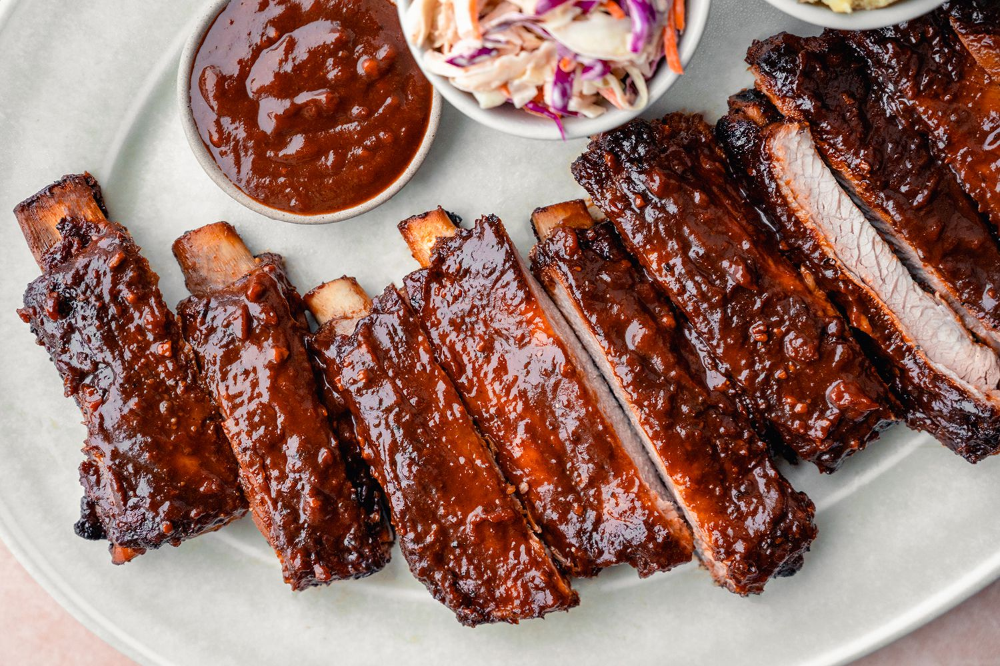

Ribs

Delicious Smoked Ribs
There is nothing better than sitting down on a cool, sunny summer day with family and friends over some ribs and cornbread.
In this installment of backyard recipes we will show you how to maintain your reign as grillmaster with these easy to make 3-2-1 ribs.
While judges may not award you for meat falling off the bone, I can guarentee that your guests will savor every bite of these tasty ribs.
The wonder of 321 ribs lies in the fool proof cooking method, that is so easy it's silly.
You can prep,set, forget, wrap, slather and enjoy while sipping on a nice glass of ice cold sweet tea.
Without further ado let's jump in and get to smoking!
Ingredients you will need:
- 1 rack of baby back Ribs
- 2 Tablespoons of your favorite rib rub
- 1 cup apple cider
- 1/4 cup dark brown sugar
- 3 Tablespoons salted butter
- 1/2 cup of your favorite BBQ sauce
9 Easy Steps to Delicious
- Preheat. Prepare your smoker by preheating it to 180 degrees F.
- Prep the ribs. Use a sharp knife to lift up the corner of the membrane on the back of the ribs. Using a paper towel, grip the membrane and pull firmly to fully remove the membrane. Trim any excess fat off the ribs as needed.
- Season. Liberally season both sides of the ribs using Hey Grill Hey Sweet Rub, starting with the bone side.
- Smoke. Place the seasoned ribs on the smoker and close the lid. Leave them to smoke for 3 hours (The ribs should be somewhere around an internal temperature of 165 degrees F at the end of these 3 hours).
- Make the braise. Tear off a large piece of aluminum foil and place it on a large working surface. Transfer the ribs to the foil bone side up so the bones don't tear through the foil. Sprinkle the ribs with the brown sugar, top with the butter cut into small pads, and then pour in the apple cider. Tightly crimp the foil together to create an airtight seal.
- Continue smoking. Return the wrapped ribs to the grill and increase the temperature in the smoker to 225 degrees F. Let the ribs braise for 2 hours in the foil.
- Sauce. Carefully remove the ribs from the grill and place them on a large working surface. Open the foil package (be careful of hot steam) and use tongs to remove the ribs and place them back on the grill, bone side down. Discard the foil and excess cooking liquid. Next, brush the ribs with Everything BBQ Sauce (or your favorite BBQ sauce).
- Finish smoking. Return the unwrapped, sauced ribs to the smoker. Close the lid, and continue smoking for an hour (or less!) or until the ribs reach around 200 degrees F and the sauce is sticky and set.
- Rest, slice, and enjoy. Remove the ribs from the smoker and rest for 10-15 minutes. Slice into individual ribs, and serve with extra sauce, as desired.